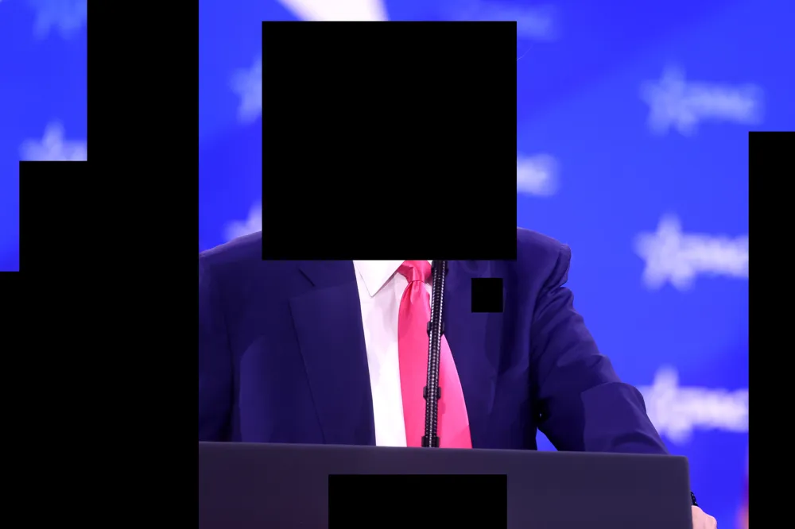

Politik

Källa: Trump vill införa censur
Den amerikanska presidenten Donald Trump vill införa total censur över all media i alla länder med i NATO. Förslaget försöker föras genom kongressen och sedan på NATO-nivå innan midterms. Kritiker till förslaget säger att det går emot konstitutionen men talespersoner från Vita huset har gått ut och sagt att de inte bryr sig. Presidenten gick ut med ett uttalande till både nationen och NATO på söndagen och sa: "All media bör kunna kontrolleras av mig. [...] Jag kommer sitta där, i mitt lilla ovala rum, och censurera alla tidningar". Han fortsatte med en tvåtimmarlång förklaring om varför Joe Biden aldrig ens rörde en censurpenna i hela sitt liv.